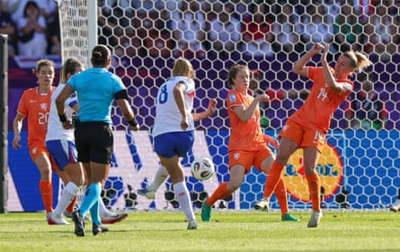
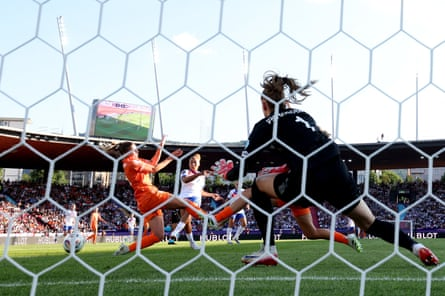

From shambolic to sublime, England, the reigning European champions, brushed off fears of a group stage exit with a thrilling and clinical 4-0 defeat of the Netherlands to put progression firmly in their hands.
Woken up by a somewhat humbling 2-1 loss to France on Saturday, a more recognisable England arrived at the 2025 Euros, two goals from Lauren James and one apiece from Georgia Stanway and Ella Toone ensuring a win against Wales on Sunday will be enough for England to book a place in the knockout stage while France and the Netherlands battle it out for the other Group D spot.
The bones of England’s defeat to France had been well and truly picked over, and there was a calmness around the England camp in the buildup to the game Toone described as “a final that’s come really early in the tournament”. England know how to win knockout matches, having reached back-to-back major tournament finals, and that was the territory they had entered a little earlier than planned. They also know how to shake off a defeat against top level teams, their 2-1 Nations League loss to France in May 2024 followed by a 2-1 win over the same opposition in St Étienne four days later.
The Netherlands were a familiar foe too, Sarina Wiegman’s former side had eight WSL players in the starting XI and two more who have previously played in England.
With her team selection it was clear that Wiegman could see the issues many had theorised over in the intervening four days, Toone was returned to the midfield to restoring some structure to it, generational talent Lauren James was not sacrificed but shifted wide replacing Beth Mead, and left-footed Alex Greenwood returned to her old left-back berth with Jess Carter partnering Leah Williamson in the middle of defence. James in the No 10 role had been a valid experiment, but it hadn’t paid off.
However, as Stanway had pointed out, a terrible England ran France close and an equaliser wasn’t out of the question as the clock ticked down in Zurich last Saturday. They just needed to be better and, surely, as many players as had a bad game against France wouldn’t to the same extent days later?
Georgia Stanway puts England 2-0 ahead.Photograph: Ralf Ibing/firo sportphoto/Getty Images
The difference between the sloppy and slightly shellshocked play against the French and the focused and aggressive football played against the Dutch in a sunny Stadion Letzigrund was night and day. The threat of an exit had sharpened the minds and the passing significantly, and Keira Walsh, Stanway and Toone dictated play from the middle and increased the potency of Lauren Hemp and James out wide as Andries Jonker’s side got narrower and narrower.
It took just three minutes for Wiegman’s side to threaten, Hemp’s cross put narrowly wide by James and the Oranje similarly demonstrated their danger moments later, Kerstin Casparij released Chasity Grant on the right who sent the ball towards Vivianne Miedema but Leah Williamson did enough to disrupt the run of the forward and Hannah Hampton collected.
If this ground had been France’s playground on Saturday, it was England’s turn to play on Wednesday evening and by the 23rd minute they had a deserved lead. It was back-to-front route-one football, Hampton’s pitch splitting pass found Alessia Russo to the right, the forward played it to James and she cut inside and lashed past Daphne van Domselaar.
They had been worthy of a second and it came in added time at the end of the first half, a free-kick just inside the Dutch half was half-cleared as far as Russo, the forward flicked the ball on to Stanway who fired in.
Lauren James fires home England’s third.Photograph: Matthew Childs/Reuters
Russo was denied a goal of her own shortly after the break, her header ruled out as Williamson had been offside in the buildup, but it mattered little. England were so rampant that Jonker had rung the changes at half-time, Caitlin Dijkstra, Sherida Spitse and Lineth Beerensteyn on for centre-back Veerle Buurman, midfielder Jill Roord and right-back Esme Brugts.
The holders’ third arrived at the hour mark, Russo swiped and missed, Toone’s effort came back off a defender and James stroked the loose ball in. Toone made up for that miss shortly after. Russo provided the assist, cutting back to Toone in the middle who skipped free of a challenge and poked home.
It was game over, the final minutes played out with little of note. The final whistle prompted a deafening rendition of Sweet Caroline, the vibe so so different to the bowed heads and furious faces following the first game. England’s title defence is well and truly alive.